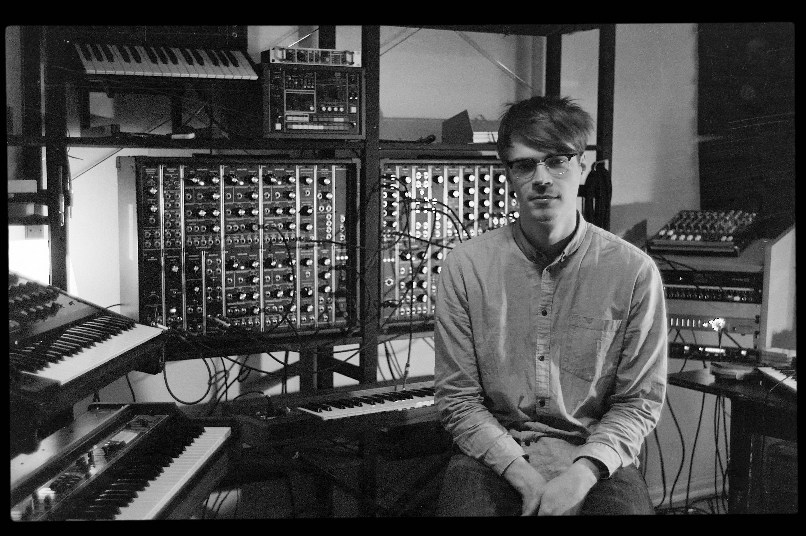

Fra Prins Thomas sitt selskap, Full Pupp, kommer et av landets mest spennende tilskudd til den norske elektronikascenen. Når man deler kontorer med Lindstrom og Todd Terje, kan det ikke bli noe annet en deilig analog dansemusikk, bygget på en modulær synthesizer og en trommemaskin!
